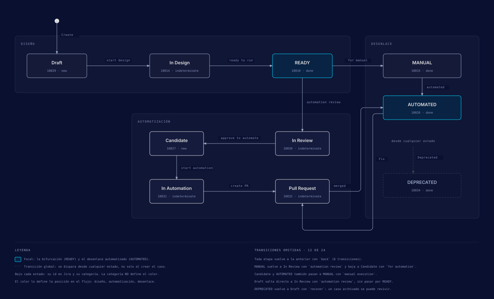
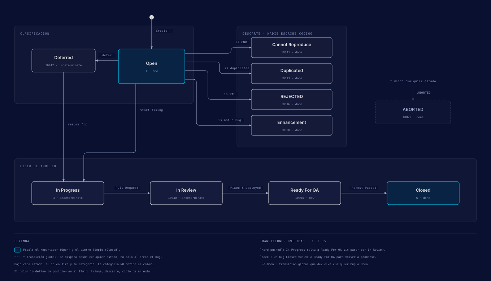

Jira y Xray: el tracker y el TMS del repo
Qué configurar en Jira Cloud y en Xray Cloud para que los skills puedan crear tests, planes y ejecuciones, y cómo el repo guarda una copia local de tu configuración para no adivinar ids ni nombres de estados.
Alcance y modalidades
Este repo trabaja con Jira Cloud y Xray Cloud. Jira guarda las historias, los bugs y los work types de QA; Xray añade los tipos de issue de test management (Test, Test Plan, Test Execution, Test Set y Precondition) y el registro de cada ejecución. Las versiones Server y Data Center no están soportadas: la CLI de Xray y los scripts de sincronización hablan solo con las APIs de Cloud.
Hay una segunda modalidad para proyectos sin licencia de Xray, llamada
jira-native. En ella el ATP y el ATR viven en custom fields de la historia y los
test cases son un work type Test propio. Esta guía cubre la modalidad con Xray;
la configuración de jira-native está en
.agents/skills/test-documentation/references/jira-setup.md (sección 3).
| Concepto | Qué es | Valores |
|---|---|---|
| Test Type | Cómo está escrito el test | Manual, Cucumber, Generic |
| Estado del Test | Dónde está el test case en su workflow de Jira | Draft, In Design, READY, MANUAL, In Review, Candidate, In Automation, Pull Request, AUTOMATED, DEPRECATED |
| Execution Status | Resultado de un Test Run dentro de una Test Execution. Se reinicia en cada ejecución. |
TODO, EXECUTING, PASS, FAIL,
ABORTED, BLOCKED
|
| Requirement | Un issue que los tests pueden cubrir | Story, Epic y, si quieres, Bug |
La diferencia entre el estado del Test y el Execution Status es la confusión más común. El
detalle está en .agents/skills/test-documentation/references/xray-platform.md.
Antes de empezar
- Un sitio de Jira Cloud y permisos de administrador de Jira (los necesitas para issue type schemes, screens y workflows).
- Una licencia de Xray Cloud, de prueba o de pago.
- La lista de módulos de tu producto (Auth, Checkout, Billing...). La usarás para las carpetas del Test Repository y para los components.
-
El repo instalado con
bun run setupy un.envcreado a partir de.env.example.
Reserva entre dos y cuatro horas si partes de un proyecto vacío.
Instalar Xray y añadir sus work types
-
Instala la app
En Jira, abre Settings (engranaje) > Apps > Find new apps, busca "Xray Test Management" y pulsa Get it now. Activa la licencia o el trial cuando te lo pida.
-
Comprueba la instalación
Deben aparecer cinco tipos de issue nuevos (Test, Precondition, Test Set, Test Execution y Test Plan), una sección de Xray en Settings > Apps y los paneles de Xray dentro de los issues.
-
Añade los tipos al proyecto
En Project settings > Issue types, usa Actions > Add Xray Issue Types y marca los cinco.
-
Activa la cobertura de requisitos
En Project settings > Apps > Xray Settings > Test Coverage, marca Story y Epic como issues cubribles (Bug es opcional). En la configuración global de Xray, Issue Type Mapping, deja Story y Epic como requirement types y Bug como defect type.
-
Revisa los Test Types
Xray trae
Manual(pasos que ejecuta una persona),Cucumber(Gherkin) yGeneric(una referencia sin estructura, la que usan los tests automatizados con Playwright). Con esos tres alcanza; no hace falta crear tipos propios.
Workflows
Los skills mueven los issues de estado por su nombre de transición, así que el workflow de
tu proyecto tiene que existir antes de la primera sesión. Los tres diagramas son los
workflows de la instancia de referencia de la metodología IQL: historia, test case y bug. Si
tu proyecto usa otros nombres, no pasa nada; el repo los descubre con
bun run jira:sync-workflows (lo ves en
Catálogos locales).
Historia de usuario

Test case

El workflow del Test es el que más vas a tocar a mano, así que aquí van sus estados y
transiciones tal como están en el catálogo del repo
(.agents/jira-workflows.json, clave test_case). Los nombres de
transición van en minúscula, copiados letra por letra.
| Estado | Categoría en Jira | Significado | Etapa IQL |
|---|---|---|---|
| Draft | To Do | Recién creado, se está escribiendo | TMLC |
| In Design | In Progress | Se escriben pasos, datos y resultado esperado | TMLC |
| READY | Done | Documentado, listo para ejecutar o revisar | TMLC |
| MANUAL | Done | Se queda manual | TMLC |
| In Review | In Progress | Se evalúa el ROI de automatizarlo | TALC |
| Candidate | To Do | Aprobado para automatizar, en backlog | TALC |
| In Automation | In Progress | Se está escribiendo el script | TALC |
| Pull Request | In Progress | Código enviado, esperando merge | TALC |
| AUTOMATED | Done | Automatizado y dentro de la suite de regresión | TALC |
| DEPRECATED | Done | Ya no es válido | Cualquiera |
No inventes estados: Approved y Automating no forman parte de este
workflow.
Todas las transiciones del Test (24)
| Desde | Hacia | Transición |
|---|---|---|
| Draft | In Design | start design |
| Draft | In Review | automation review |
| In Design | READY | ready to run |
| In Design | Draft | back |
| READY | MANUAL | for manual |
| READY | In Review | automation review |
| READY | In Design | back |
| In Review | Candidate | approve to automate |
| In Review | READY | back |
| Candidate | In Automation | start automation |
| Candidate | MANUAL | manual execution |
| Candidate | In Review | back |
| In Automation | Pull Request | create PR |
| In Automation | Candidate | back |
| Pull Request | AUTOMATED | merged |
| Pull Request | In Automation | back |
| MANUAL | In Review | automation review |
| MANUAL | Candidate | for automation |
| MANUAL | AUTOMATED | automated |
| AUTOMATED | Pull Request | Fix |
| AUTOMATED | MANUAL | manual execution |
| DEPRECATED | Draft | recover |
| Cualquiera | DEPRECATED | Deprecated |
| (creación) | Draft | Create |
Bug

Para crear el workflow del Test en tu sitio:
-
Crea el workflow
Settings > Issues > Workflows > Add workflow, con los estados y transiciones de las tablas de arriba.
-
Asígnalo al work type Test
En Workflow schemes, asocia el workflow al tipo Test y asigna el scheme a tu proyecto.
-
Descárgalo al repo
Ejecuta
bun run jira:sync-workflowspara que el catálogo local refleje lo que acabas de crear.
Test Repository
El Test Repository es el árbol de carpetas de Xray para ordenar los tests. Lo abres desde el proyecto, en Tests > Test Repository. Crea una carpeta por módulo del producto y subcarpetas por funcionalidad (clic derecho sobre la raíz > Create folder). Los tests existentes se mueven arrastrándolos o con las acciones masivas.
Test Repository
├── Auth
│ ├── Login
│ ├── Logout
│ └── Password Reset
├── Bookings
│ ├── Create Booking
│ └── Cancel Booking
├── Invoices
│ └── Export Invoice
└── Smoke Tests
└── Critical PathsCredenciales y .env
Necesitas dos juegos de credenciales, las dos para Cloud:
- Token de Atlassian
-
Lo usan
acli, la CLI de Xray para las funciones de Jira y los scriptsjira:*. Se crea en id.atlassian.com. - API key de Xray
- Un par Client ID y Client Secret. Se crea en Settings > Apps > Xray > API Keys > Create API Key. Dale un nombre que diga para qué es, por ejemplo "QA Automation - CI". Copia los dos valores en el momento: el secret no se vuelve a mostrar.
Después rellena estas variables en tu .env:
| Variable | Para qué | ¿Obligatoria? |
|---|---|---|
ATLASSIAN_EMAIL |
Email de tu cuenta de Atlassian | Sí |
ATLASSIAN_API_TOKEN |
Token de la API de Atlassian | Sí |
XRAY_CLIENT_ID |
Client ID de la API key de Xray | Sí, con Xray |
XRAY_CLIENT_SECRET |
Client Secret de la API key de Xray | Sí, con Xray |
XRAY_PROJECT_KEY |
Proyecto para la sincronización local de Xray. Ningún workflow de CI la lee | Opcional |
AUTO_SYNC |
Interruptor del write-back de resultados. En false la corrida no
escribe nada en Xray
|
Opcional (por defecto false) |
STP_EXECUTION_KEY |
La Test Execution donde se importan los resultados: la RTR de la regresión o la STR de cierre de sprint. Nunca la clave de un Test Plan | Sí, para el write-back |
RTP_KEY |
Clave del Regression Test Plan, solo para el fallback local | Opcional |
JIRA_PROJECT_KEY |
Sustituye la clave de proyecto de .agents/project.yaml en una corrida
|
Opcional |
.env
El host de Atlassian vive en .agents/project.yaml, clave
issue_tracker.atlassian_url, y en ningún otro sitio local. Lo configuras con
bun run agents:setup y lo consultas con
bun run --silent jira:url. Una copia vieja en una variable de entorno puede
apuntar los scripts a un sitio muerto sin dar ningún error; por eso no existe
ATLASSIAN_URL en .env.example.
La lista completa y comentada está en .env.example. AUTO_SYNC,
XRAY_CLIENT_ID, XRAY_CLIENT_SECRET y
STP_EXECUTION_KEY también son secrets de CI: los sube a GitHub Actions
bun run setup --variables.
Catálogos locales y jira:check
Cada sitio de Jira da ids distintos a sus custom fields y nombres distintos a sus estados.
Para que los skills funcionen en cualquier sitio, el repo descarga esa información a
archivos JSON en .agents/ y los skills la referencian por slug ({{jira.acceptance_test_plan}}
en vez de customfield_10123). Estos archivos se generan; no los edites a mano.
| Comando | Genera | Qué contiene |
|---|---|---|
bun run jira:sync-fields |
.agents/jira-fields.json |
Todos los custom fields del sitio, con su id, tipo y opciones. Usa
--force para sobrescribir un catálogo existente, por ejemplo después de
crear un campo nuevo.
|
bun run jira:sync-workflows |
.agents/jira-workflows.json |
Para cada work type declarado en .agents/jira-required.yaml: su
workflow, sus estados y sus transiciones. Solo cataloga los work types que el
manifiesto declara.
|
bun run jira:sync-link-types |
.agents/jira-link-types.json |
Los tipos de enlace entre issues (tests / is tested by,
blocks / is blocked by...). Se ejecuta a mano, rara vez.
|
El manifiesto .agents/jira-required.yaml es lo que la metodología espera
encontrar en tu sitio: campos obligatorios y opcionales, tipos de enlace y work types.
bun run jira:check compara ese manifiesto con los catálogos:
-
Cada campo obligatorio existe en
jira-fields.json(si falta, es error y el comando sale con código 1), tiene el tipo esperado y, si es de opciones, tiene todas las opciones declaradas. - Los campos opcionales que faltan solo se informan; nunca cambian el código de salida.
- Cada work type declarado aparece en
jira-workflows.json. -
Los tipos de enlace se validan si existe
jira-link-types.json; si no, el check queda en DEFERRED y sigue en verde. -
Con
--livecompara además el catálogo de workflows con lo que Jira responde ahora mismo. Sirve para detectar un catálogo que quedó viejo. Solo emite avisos.
bun run jira:baseline es un aviso aparte: te dice si tu manifiesto declara
menos work types que la versión upstream. Un manifiesto incompleto produce un
jira-workflows.json incompleto sin avisar, y las transiciones de los tipos que
faltan dejan de resolverse. Nunca bloquea: omitir un work type puede ser una decisión
legítima.
bun run jira:sync-fields
bun run jira:sync-workflows
bun run jira:sync-link-types
bun run jira:checkLa CLI de Xray
El repo trae su propia CLI de Xray en cli/xray/, que se ejecuta como
bun xray. El skill /xray-cli tiene la sintaxis completa y
bun xray --help muestra la versión actual. Estos son los comandos que usas
durante el setup:
# Autenticación (lee XRAY_CLIENT_ID y XRAY_CLIENT_SECRET del entorno)
bun xray auth login
bun xray auth status
bun xray auth logout
# Tests
bun xray test list --project PROJ --limit 20
bun xray test get PROJ-101
bun xray test create --project PROJ --summary "Verify login with valid credentials" --type Manual --labels "e2e,auth"
bun xray test add-step --test <issue-id> --action "..." --result "..."
bun xray test enrich --project PROJ
# Test Executions
bun xray exec list
bun xray exec create --project PROJ --summary "RTR: staging-2026-09-24: Regression Testing" --environment staging
bun xray exec add-tests --execution <issue-id> --tests <id1,id2>
# Importar resultados, siempre en una ejecución explícita
bun xray import junit --file test-results/junit.xml --execution PROJ-194
# Test Plans
bun xray plan list
bun xray plan get PROJ-300
test create no guarda pasos manuales: Xray Cloud los descarta. Añádelos
después, uno por llamada, con test add-step. Y pasa siempre
--execution a import junit: sin él, cada corrida crea una Test
Execution nueva que la API de importación no puede colgar después del epic "QA Test
Artifacts".
test enrich completa la copia local de .context/PBI con las
Preconditions y la pertenencia a Test Sets, que la API REST de Jira no expone.
Primer Test Plan y Test Execution
-
Configura los Test Environments
En Settings > Apps > Xray > Test Environments, añade los entornos del repo:
local,qa,stagingyproduction. Usa exactamente esos nombres, sin abreviaturas. -
Crea el Test Plan
Create > tipo Test Plan, con un summary claro, la fix version si la usas y el objetivo del plan en la descripción.
-
Añade tests al plan
Desde la sección Tests del plan, Add Tests: puedes buscarlos uno a uno, traer un Test Set entero o una carpeta del Test Repository.
-
Crea la Test Execution
Desde el plan, Create Test Execution, eligiendo el Test Environment (por ejemplo
staging) y la revisión o build. Los tests del plan entran solos.
En el día a día no harás esto a mano: los skills crean los planes y las ejecuciones con sus convenciones de nombre (ATP, STP, RTP, ATR, STR, RTR) y los cuelgan del epic de QA que corresponde. Hacerlo una vez sirve para comprobar que permisos y configuración están bien.
Validación final
- Los cinco tipos de Xray aparecen en el proyecto.
-
Los Test Types
Manual,CucumberyGenericestán disponibles. -
El workflow del Test está asignado y la transición
start designaparece en un Test en Draft. - La cobertura de requisitos está activa para Story y Epic.
- Puedes crear un enlace
is tested bydesde un Test a una historia. -
bun xray auth statusresponde autenticado ybun xray test list --project PROJdevuelve datos. bun run jira:checktermina sin errores.
Para una prueba de punta a punta: crea un test Generic, añádelo a un plan,
ejecuta Playwright con el reporter JUnit e importa el resultado con
bun xray import junit --file test-results/junit.xml --execution <KEY>. La
Test Execution debe mostrar el resultado.
Problemas frecuentes
| Síntoma | Qué revisar |
|---|---|
| No se ven los paneles de Xray | Que el issue type scheme del proyecto incluya los tipos de Xray. |
| No puedes añadir tests a un plan | Que los tests existan y que tengas permisos sobre el plan. Xray rechaza cambios de membresía en un Test Plan asignado a otra persona. |
| La API responde 401 |
Las credenciales de .env. Si las cambias, reinicia la sesión del
agente: las variables se leen al arrancar.
|
| La API responde 404 |
Que la clave del proyecto y las de los issues existan en el sitio configurado (bun run --silent jira:url).
|
| La cobertura no aparece | Que Test Coverage esté activado para ese tipo de issue. |
| Un skill no encuentra una transición |
Que el catálogo esté al día: bun run jira:sync-workflows y luego
bun run jira:check --live.
|
JQL útiles
# Tests automatizados
project = PROJ AND issuetype = Test AND status = AUTOMATED
# Candidatos a automatizar
project = PROJ AND issuetype = Test AND status = Candidate
# Tests por etiqueta
project = PROJ AND issuetype = Test AND labels in (regression, smoke)